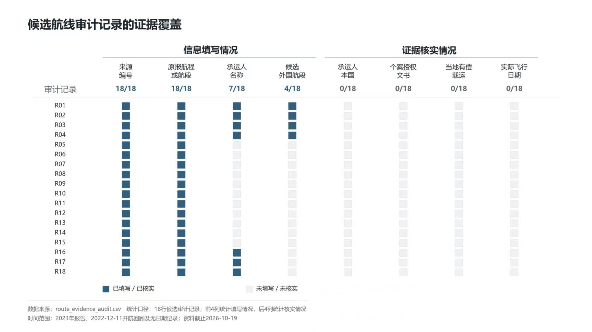
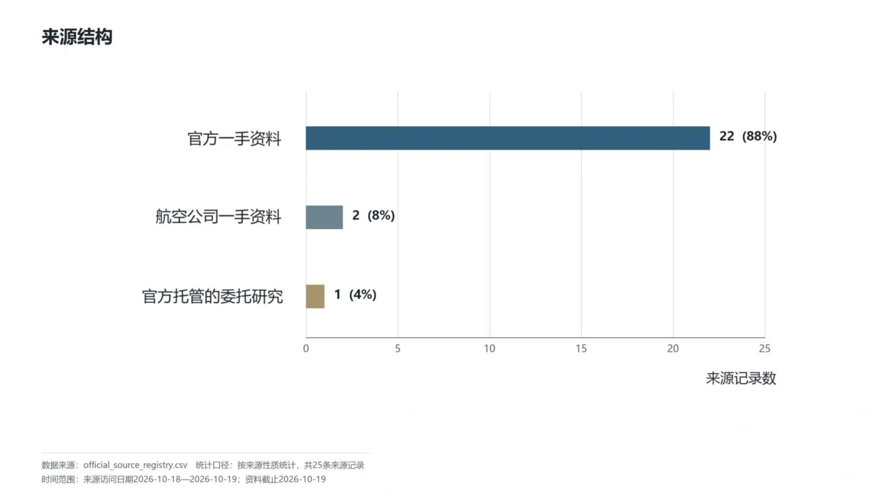
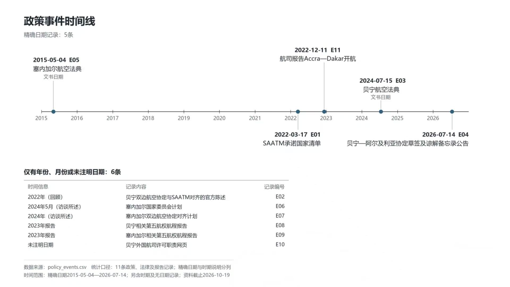

金融基础
ECB/BCEAO 81个月政策面板、26季贷款条件、年度信贷以及一家公司五年财务记录。
云程有数 · 制度开放、金融约束与待验证的综合机制
既有金融与法律成果继续保留；文献、法语组和 DS 交付作为有出处、可复核的增量归档。审计通过表示字段、来源引用与计算内部一致，不等同于法律效力或因果结论获得认证。
ECB/BCEAO 81个月政策面板、26季贷款条件、年度信贷以及一家公司五年财务记录。
贝宁—塞内加尔文本比较、区域规则与第五航权候选证据链；新文献修订与主法律矩阵分开保存。
下载法语组修订工作簿四表996个原字段保留；法律工作簿61个字段缺失比例、18个年度利率值、10个企业财务值及5个公式已复核。
文献中的 Belgium +86%、Brazil +146%是自由化指数的相对变化，不是航班量、票价或航空企业利润变化。法律文书日期不自动等于生效日期；具体许可与当地付费载运仍保留 UNKNOWN。



工作簿和清洗ZIP是组员交付归档，不直接替换主数据。阅读限制后再引用；官方原文、独立审计状态与现行法律效力仍需进一步核验。
综合研究的下一步是取得许可、实际载运、公司融资与更多可比财报，检验制度与金融约束的共同机制；当前不宣称已识别因果效应。原租赁模拟仍为历史辅助演示。